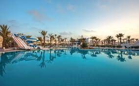
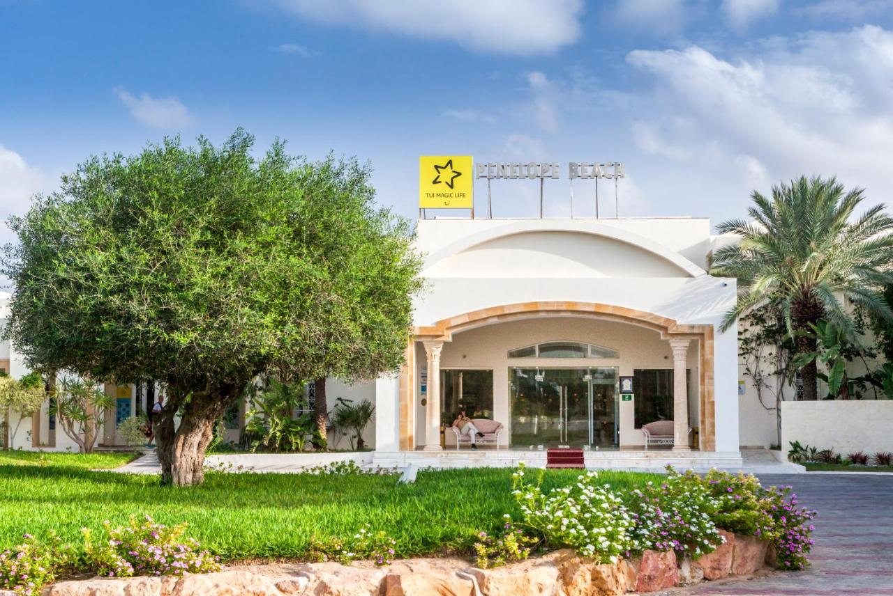
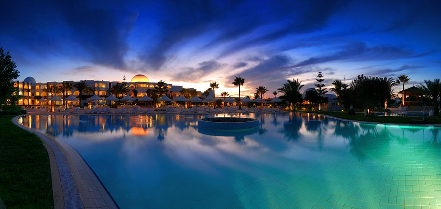

|  | El Mouradi Djerba MenzelMidoun 6,8 km du centre L'établissement El Mouradi est un hôtel tout compris doté de grandes piscines intérieure et extérieure. Il est implanté à quelques pas de la plage. Cet hébergement 4 étoiles abrite un minigolf, 9 courts de tennis et un vaste spa. L'hôtel El Mouradi est situé sur l'île tunisienne de Djerba. Il comporte des chambres climatisées pourvues d'une salle de bains privative, d'une télévision par satellite, ainsi que d'une terrasse ou d'un balcon privés. |
Note 6.4 801 expériences vécues |
| Tarif dès 116 TND par nuit Vérifier la disponibilité |
|  | TUI MAGIC LIFE Penelope BeachSitué à Midoun, à 100 mètres de la plage de Mezraia, Le TUI MAGIC LIFE Penelope Beach vous propose un restaurant, un parking privé gratuit, une piscine extérieure ouverte en saison et une salle de sport. Doté d’un bar, cet hôtel 4 étoiles compte des chambres climatisées munies d’une connexion Wi-Fi gratuite et d’une salle de bains privative. Vous bénéficierez aussi d’une réception ouverte 24h/24 ainsi que de services d'étage et de change. Les chambres sont toutes dotées d’une terrasse offrant une vue sur le jardin et d'une télévision par satellite à écran plat. |
Note 7.8 119 expériences vécues |
| Tarif dès 312 TND par nuit Vérifier la disponibilité |
|  | Djerba Plaza Thalasso & SpaZone touristique Djerba Rénové en 2014 et situé à Midoun, l'établissement Djerba Plaza Thalasso & Spa bénéficie de 2 piscines et d'un accès direct à la plage. Ce complexe 4 étoiles dispose de courts de tennis et de squash ainsi que d'un spa de luxe comprenant un sauna et un hammam. La connexion Wi-Fi est gratuite dans les parties communes. Les chambres et les suites climatisées sont dotées d'une terrasse ou d'un balcon donnant sur la mer, la palmeraie ou le parcours de golf de Djerba. Elles sont équipées d'une télévision à écran plat et d'un minibar. Toutes comportent une salle de bains privative. |
Note 7.7 433 expériences vécues |
| Tarif dès 125 TND par nuit Vérifier la disponibilité |